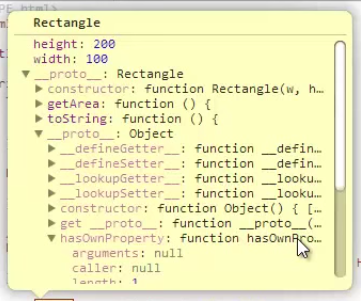

Index
- JS Шаблоны (Объекты)
- JS Шаблоны (Шаблоны создания объектов)
- JS Шаблоны (Обертки)
- JS Шаблоны (Массивы)
- JS Шаблоны (Функции / Определения)
- JS Шаблоны (Функции / Работа)
- Функции обратного вызова
- Возврат функции
- Самоопределяемые функции
- Немедленно вызываемые функции
- Значения, возвращаемые немедленно вызываемыми функциями
- JS Шаблоны (Функции / Примеры)
- JS Шаблоны (JSON)
- Работа с DOM деревом
- Шаблонизация
- Конструкторы и прототипы
- AJAX
- !Мысли
- style js
- console.time
- documentFragment
- WebWorker
- Вопросы
- Первый xhr
Конструкторы и прототипы
Конструктор
Конструктор
-
это функции, задачей которых является заполнить пустой объект свойствами и методами.Т.е. это функция, которая конфигурирует объект для дальнейшего использования.
Функция, которая наполняет объект данными.
Функция-конструктор - это эквивалент классам в других языках программирования.
~~~~~~~~~~~~~~~~~~~~~~~~~~~~~~~~~
Пример:
var point = new Object();
Если видишь new - значит происходит создание нового объекта с помощью констурктора.
Слово new указывает на то, что создается новый пустой объект. Т.е. объект, в котором ничего нет.
Функция Object() - значит в пустом объекте, который создается с помощью new, будут некоторые свойства и методы, которая
добаляет эта функция ( функция Object() );
~~~~~~~~~~~~~~~~~~~~~~~~~~~~~~~~~
Системные конструкторы
:Конструктор new Object - создает пустой объект ;
Конструктор new Date() - берет локально время пользователя и создает объект с методами и свойствами этого времени (месяц, год,
день и пр) ;
Конструктор new Array() - создает массив ;
Конструктор new String() - создает объект строкового типа ;
( var str = "string" - переменная со стороковым значением,
когда интерпритатор видит строкове значение, он вызывает конструток new String() ;
т.е. строка становится объектом строкового типа, поэтому можно обратиться к ней и вызвать метод, например, lowerCase.
'string'.lowerCase
Разница в том, что со строкой, созданной через конструтор, можно работать как с объектом; )
Конструктор new Function()
PS Системные констуркторы можно указывать без оператора new. Но лучше всегда использовать new!!
~~~~~~~~~~~~~~~~~~~~~~~~~~~~~~~~~
Объявление функции конструктора:
function Point(x, y) {
this.x = x;
this.y = y;
}
var p = new Point(10, 20);
this.x = x;
this.y = y;
}
var p = new Point(10, 20);
В этой функции мы пользуемся ключивым словом this. C помощью него добавляем объекту раличные свойства и методы.
Откуда берется ключевое слово this?
Функцию конструктор мы запускаем с помощью ключевого слова new. New cоздает пустой объект, передает его в функцию и внутри
функции мы можешь получать доступ к объекту с помощью ключевого слова this. This всегда будет указывать на тот объект, который
был создан с помощью функции конструтора.
Что происходит в примере выше?
Создали пустой объект через new, передали его в функцию конструктор Point, функция конструктор добавила пустому объекту два
свойства, этот объект с двумя сойствами был записан в переменную Р ;
Например, у нас есть 10 объектов user, которые имеют одинаковые свойства и методы.
Чтобы не создавать и не заполнять их в ручную (что, кстати, может привести к ошибке, например, из за невнимательности), можно
создать функцию конструктор, в которой будут описываться общие свойства и методы для всех 10 объектов user.
Т.е. фукнция конструктор будет что-то вроде шаблона, по которому будут заполняться все объекты, создаваемые с помощью этого
конструктор. И эти объекты будут является экземплярами этой самой функции конструктора.
Статичные свойства и методы - методы и свойства самого конструктора
Экземплярные свойства и методы - методы и свойста экземпляра объекта конструктора
~~~~~~~~~~~~~~~~~~~~~~~~~~~~~~~~~
ПРОТОТИПЫ
Связь между конструтокром и прототипом:
• Каждая созданная функция имеет прототип
• Каждая созданная функция имеет ссылку на этот прототип - "prototype"
• Прототип созданной функции имеет ссылку на эту функцию - "constructor"
Как это работает?
function Rectangle(x, y) {
this.width = x;
this.height = y;
}
Rectangle.prototype.getArea = function() {
return this.width * this.height
}
var a = new Rectangle(20, 40);
var b = new Rectangle(50, 60);
a.getArea(); // 800
this.width = x;
this.height = y;
}
Rectangle.prototype.getArea = function() {
return this.width * this.height
}
var a = new Rectangle(20, 40);
var b = new Rectangle(50, 60);
a.getArea(); // 800
this в методе прототипа будет указывать не на прототип, а на объект, который вызывает этот метод.
Object является прототипом любого объекта в js. Т.е. методы, которы есть у него, будут доступны любому объекту

~~~~~~~~~~~~~~~~~~~~~~~~~~~~~~~~~
Методы объектов
*ссылка на материал - ссылка
• toString
• valueOf - значение
• hasOwnProperty - узнать, есть ли свойство в объекте (но не в прототипе) / для объекта и прототипа - in
• equals - для сравнения объектов
• compareTO - для сравнения объектов